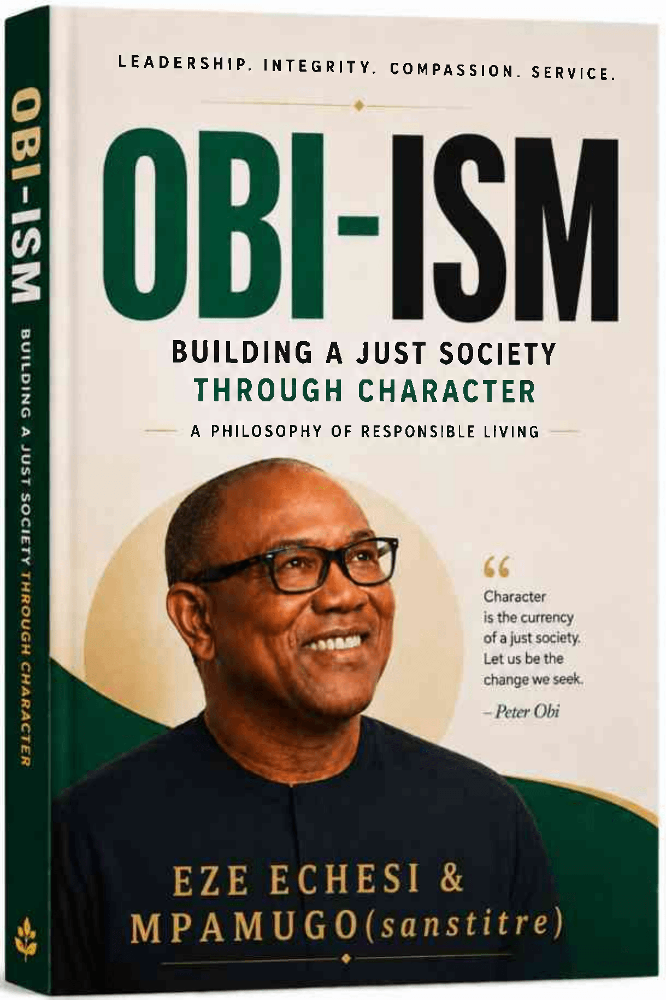

01
Read the full work
The complete approved manuscript, structured as a digital reading experience.

IDEAS · INTEGRITY · IMPACT
BUILDING A JUST SOCIETY THROUGH CHARACTER
Character
builds nations.
A living philosophy for the people, institutions, and future we choose to build together.
PEOPLE | PRINCIPLES | PROGRESS
COMPLETE DIGITAL EDITION · $9.95 USD
THE PUBLICATION
OBI-ISM is a focused digital publication for readers who want to examine the relationship between personal character, public leadership, and a more just society.

01
The complete approved manuscript, structured as a digital reading experience.
02
Move through the publication’s principles, chapters, and source-backed passages.
03
Read with intention and return to the ideas that deserve more thought.
AN UP-CLOSE PERSPECTIVE
From a former aide’s close perspective, discover the character and everyday choices behind a philosophy of leadership, service and public trust.
When honesty gives way to shortcuts, trust suffers. OBI-ISM invites readers to consider what changes when character guides our homes, institutions and decisions.
GET THE DIGITAL EDITIONPREFACE
“This book began as a question, not an answer.”
This book began as a question, not an answer.
For years, I watched a man navigate public life with what seemed like an almost impossible consistency. He did not shout. He did not accumulate visible wealth while in positions of authority. He traveled without entourages, wore simple clothes, and spoke of public funds as though they were sacred vessels holding the hopes of millions. In a world saturated with performative leadership and of leaders who stage-manage their generosity, who photograph their humility, who weaponize their simplicity, this man simply lived a certain way, and the living itself was the message.
At first, I thought I was studying a political figure. I was wrong. I was studying a philosophy in motion.
The central insight that struck me, and that eventually demanded this book, was that his way of living was not personal eccentricity. It was not cultural peculiarity. It was not even, in the narrow sense, political strategy. It was a coherent, transferable, deeply practical system of living. It is a set of principles about money, truth, power, time, people, and purpose that could be extracted, examined, taught, and lived by anyone, anywhere, in any station of life.
I came to call this system OBI-ISM. The hyphen is deliberate. It separates the name from the doctrine, signaling that this is not about a man but about a method. The name "Obi" anchors the philosophy in a real human laboratory as a life actually lived, decisions actually made, consequences actually experienced. The "-ISM" transforms that life into universal principles. Universal set of principles: prudence, honesty, simplicity, justice, delayed gratification, accountability, service. The book will argue with evidence drawn from markets, boardrooms, governments, and ordinary human lives that prove that these principles are not merely noble but effective. That they produce better outcomes, over the long term, than their alternatives. That a life built on them is more resilient, more satisfying, and more significant than a life built on their opposites.
Let me be clear from the outset about what this book is, and what it is not.
It is not a biography, though it contains biographical moments. It is not a political manifesto, though it engages deeply with governance. It is not a work of hero worship, though it draws inspiration from a life courageously lived. It is not a book about Nigeria, though Nigeria is the soil from which these lessons grew. It is not a book about one man's career, though that career provides the laboratory in which these principles were tested.
This book is an excavation. It digs beneath the surface of one remarkable life to unearth timeless principles that belong to no single person, no single nation, no single era. It asks: What if the way this man lived, his relationship with resources, with truth, with power, with people was not an anomaly but a model? What if the quiet discipline he practiced contained answers to the dysfunctions plaguing our families, our businesses, our governments, and our civilization?
The name "Obi" will appear throughout these pages, but not as an object of praise. It will appear as a case study. The way medical researchers study a patient who exhibits extraordinary health to understand the principles of wellness that apply to all. The goal is not to elevate the man but to understand the system embedded in his life, so that we might embed it in our own.
This book is therefore an act of translation. It translates a lived life into a learned philosophy. It moves from the specific (what one person did) to the universal (what all of us can do). It says: Here are principles. Here is evidence that they work. Here is how you can apply them. The rest is your choice.
The world does not need more idolatry. It groans under the weight of celebrity culture, political messianism, and the desperate hope that a single individual will rescue us from our collective failures. What the world needs is a renewal of character infrastructure. Renewal of the invisible moral architecture that supports functional families, honest businesses, trustworthy governments, and peaceful societies. That infrastructure is built one life at a time, one decision at a time, one principle at a time. OBI-ISM is a blueprint for that construction project.
I have structured this book in four parts. Part I explores the making of the philosophy. This explores the formative experiences, observations, and decisions that shaped a particular way of seeing the world. Part II unpacks the foundational principles: prudence, honesty, simplicity, justice, delayed gratification, accountability, and the human-centered approach to leadership. Part III applies these principles to the domains of business, governance, and public service. Part IV looks forward, asking how OBI-ISM can shape the future of child-rearing, institutional reform, national development, and global leadership.
Throughout, I have tried to resist the temptation of easy moralizing. The world is complex. Human beings are flawed. No single philosophy answers every question. OBI-ISM is not a totalizing system; it is a compass, not a cage. It points in a direction without pretending that every step along the path will be clear. I have tried to acknowledge tensions, trade-offs, and the genuine difficulties of living these principles in a world that often punishes them in the short term.
And yet, I have also tried to tell the truth as I have seen it: that the long-term flourishing of human communities depends on precisely these principles. That the alternative to prudence is eventual collapse. That the alternative to honesty is the death of trust. That the alternative to simplicity is the slavery of appearances. That the alternative to justice is accumulated rage. That the alternative to delayed gratification is a future consumed by present appetites. That the alternative to accountability is the corruption that corrodes everything it touches.
The central question of this book is not "Was this man a good leader?" The central question is: "What would happen if homes, schools, businesses, churches, companies, and governments operated this way?" I invite you to carry that question with you through every chapter. Let it interrogate your assumptions. Let it disturb your complacency. Let it ignite your imagination.
This book is written for the young person trying to build character in a culture of shortcuts. It is written for the parent wondering how to raise children with values that last. It is written for the entrepreneur deciding whether integrity and profitability can coexist. It is written for the public servant tempted by the corruptions of power. It is written for the citizen who has lost faith that principled leadership is possible. It is written for the teacher, the pastor, the student, the activist, the manager, the neighbor and for anyone who suspects that the way we live matters, and that better ways of living are possible.
If, by the end of this book, you find yourself asking, "What if I lived this way?", then this book will have done its work. The journey begins not with a political campaign but with a personal decision. It begins in the quiet moment when an individual chooses principle over convenience, long-term flourishing over short-term gain, character over performance. OBI-ISM, ultimately, is not about one man. It is about the possibility, available to every human being, of building a life on foundations that hold.
Hon. Eze Echesi (Former Commissioner of Finance, Anambra State, 2006-2012)
THE IDEAS
The book places character at the center of the practical work of building a fairer, more capable, and more prosperous Nigeria.
01
The habits that shape leaders, institutions, and the trust required for a just society.
02
A civic philosophy rooted in dignity, responsibility, and the common good.
03
How collective discipline and hopeful action turn aspiration into progress.
COMPLETE DIGITAL EDITION
The digital edition is a one-time ₦6,995 NGN for Nigerian readers, or $9.95 USD internationally — the same protected edition either way.